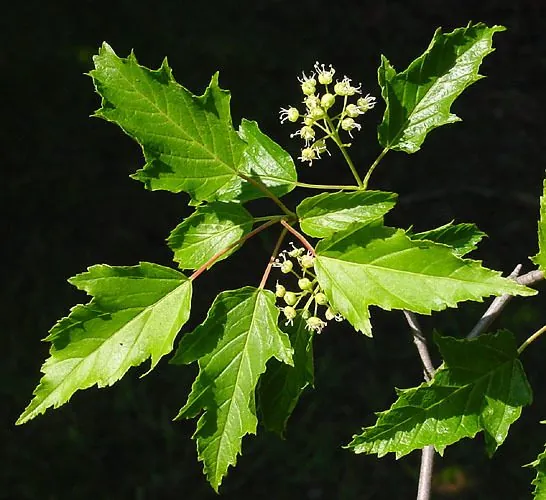

乔木 · 植物界
茶条槭 Acer ginnala

无患子科槭属落叶小乔木，叶三裂、秋日转红，嫩叶可代茶煎饮，故称茶条槭，是北方重要的观叶树种。
- 分类
- 门被子植物门纲木兰纲目无患子目科无患子科属槭属
- 栖息环境
- 海拔 800 米以下的山坡、沟谷与河岸，耐寒耐旱
- 地理分布
- 中国东北、华北、内蒙古、陕西、甘肃；朝鲜、日本、俄罗斯远东
- 保护级别
- 暂无评估；未被列入国家重点保护野生植物名录
物种志
茶条槭为无患子科槭属落叶小乔木或灌木，高五至六米，树皮灰褐色，小枝细瘦。叶片纸质，卵形或长卵形，常三裂，中裂片较长，边缘具不规则重锯齿，秋季转为鲜红色。花小，黄绿色，组成伞房花序，花期五月；翅果双翅近于水平展开，果期九月。
茶条槭分布于中国东北、华北、内蒙古、陕西、甘肃等地，朝鲜、日本、俄罗斯远东地区也有，多生于海拔八百米以下的山坡、沟谷和河岸。它耐寒、耐旱、耐修剪，对土壤要求不严，在微酸性至中性土壤中均能生长。秋季叶色红艳，是北方重要的观叶树种，也可作绿篱和盆景材料；嫩叶经蒸煮后可代茶饮用，树皮富含纤维，可制绳和造纸。
形态与习性
- 株高5–6 m，小乔木或灌木
- 花期5 月，伞房花序黄绿色
- 果期9 月，翅果双翅近水平
- 光照喜光，也耐侧方庇荫
- 水分耐旱，喜湿润而不积水
- 土壤微酸至中性壤土均可
- 主要用途观叶树、绿篱，嫩叶代茶
趣味知识
- 茶条槭的嫩叶经蒸煮、揉捻后可当茶饮用，茶条之名由此而来。
- 秋季叶色由黄转红，在北方园林中是重要的秋色叶树种。
- 它的翅果成熟后双翅近水平展开，风一吹便像小飞机般旋转下落。